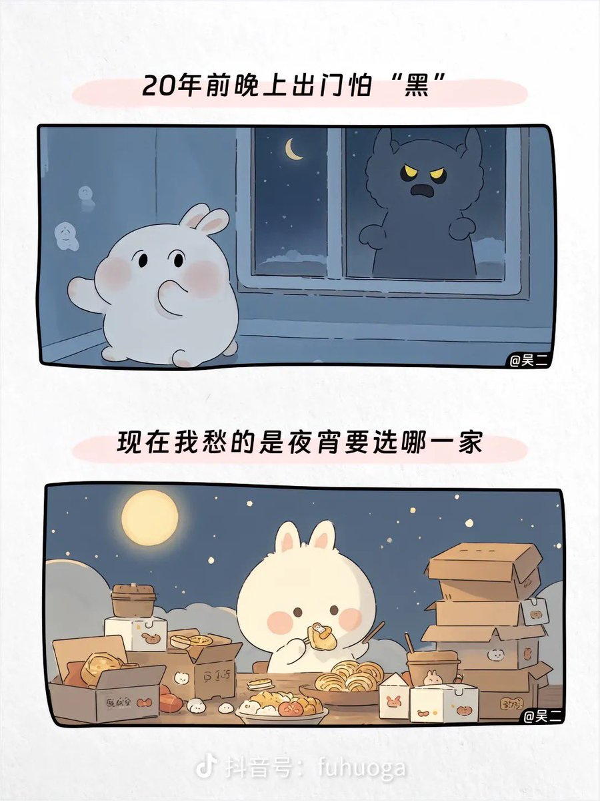
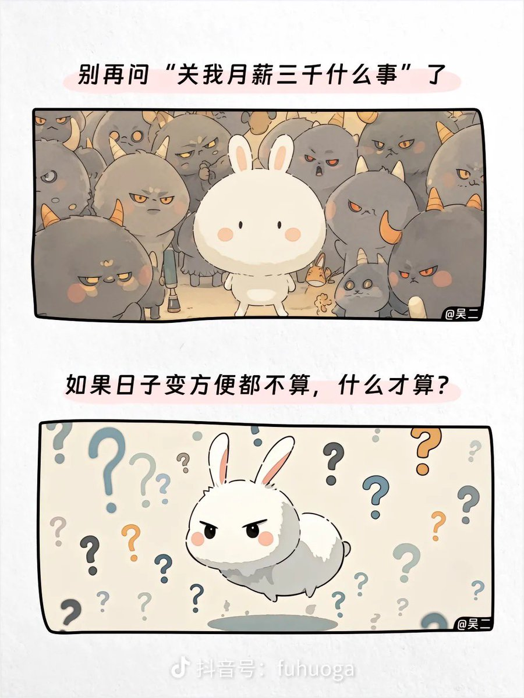

小虚空🍥
@tokerumaisurii
@AlanKiller8964 只能说地区差别和个人/阶级差别太大了，有人在愁吃什么夜宵的同时仍然有人在夜里怕黑，典例就是全国扫黑除恶大运动几年之后仍然发生了的唐山打人事件。画这图的人应该既生活在治安好的城市甚至区，又足不出户不关心新闻，也不用做送外卖送快递打螺丝之类实际构成所谓“日子变方便”的工作。


Alan·Killer
@AlanKiller8964
對經濟發展大談特談，對人權建設（包括但不限於言論自由、宗教自由、新聞出版自由、司法獨立、公務員財產公開等）避而不談，這就是贏學嗎？😆 https://t.co/HioMtsl4d7